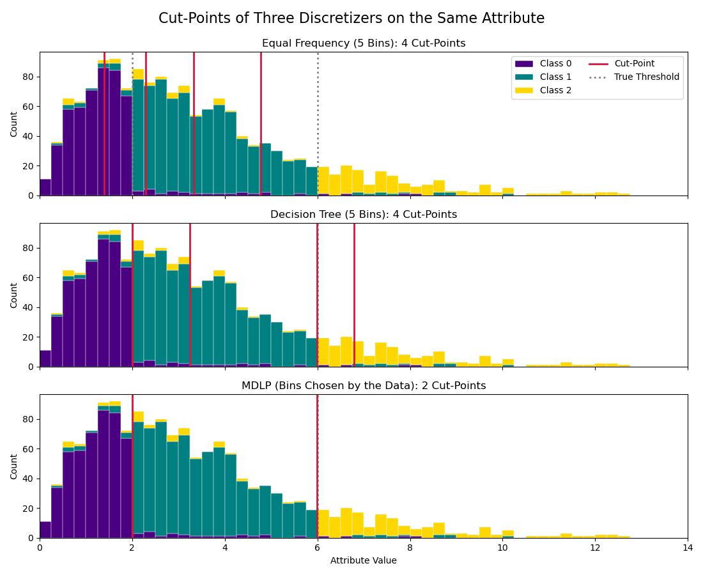

Note
Go to the end to download the full example code.
Supervised Discretization: Where the Cuts Fall#
This example compares where three discretizers place their cut-points on the same continuous attribute.
The Scenario: The attribute is skewed (most values are small) and the class changes at two thresholds, $x = 2$ and $x = 6$, with some label noise.
The Discretizers:
Equal frequency (
sklearn.preprocessing.KBinsDiscretizer): ignores the class, so its cuts follow the density of the attribute and pile up where the data are, not where the class changes.skbn.DecisionTreeDiscretizer: supervised, but it produces as many bins as it is asked for.skbn.MDLPDiscretizer: the method of Fayyad and Irani (1993). It splits recursively on class entropy and stops when the Minimum Description Length criterion says that a further cut is not worth its cost, so the number of bins is chosen by the data.
MDLP recovers the two thresholds and nothing else.

Equal Frequency (5 Bins) [1.39 2.3 3.33 4.77]
Decision Tree (5 Bins) [2. 3.24 5.99 6.79]
MDLP (Bins Chosen by the Data) [2. 5.99]
Sepal Length [5.55 6.15]
Sepal Width [2.95 3.35]
Petal Length [2.45 4.75]
Petal Width [0.8 1.75]
# Author: The scikit-bayes Developers
# SPDX-License-Identifier: BSD-3-Clause
import matplotlib.pyplot as plt
import numpy as np
from sklearn.datasets import load_iris
from sklearn.preprocessing import KBinsDiscretizer
from skbn import DecisionTreeDiscretizer, MDLPDiscretizer
# --- 1. Generate a Skewed Attribute with Two Class Thresholds ---
rng = np.random.RandomState(42)
n_samples = 1500
true_cuts = [2.0, 6.0]
x = rng.gamma(shape=2.0, scale=1.6, size=n_samples)
y = np.digitize(x, true_cuts)
# Label noise: 10% of the labels are replaced at random
noisy = rng.rand(n_samples) < 0.10
y[noisy] = rng.randint(0, 3, size=noisy.sum())
X = x.reshape(-1, 1)
# --- 2. Fit the Discretizers ---
kbins = KBinsDiscretizer(
n_bins=5, encode="ordinal", strategy="quantile", subsample=None
).fit(X)
tree = DecisionTreeDiscretizer(n_bins=5, random_state=0).fit(X, y)
mdlp = MDLPDiscretizer().fit(X, y)
cuts = {
"Equal Frequency (5 Bins)": kbins.bin_edges_[0][1:-1],
"Decision Tree (5 Bins)": tree.thresholds_[0],
"MDLP (Bins Chosen by the Data)": mdlp.cut_points_[0],
}
for name, c in cuts.items():
print(f"{name:32s} {np.round(np.sort(c), 2)}")
# --- 3. Plotting ---
colors = ["indigo", "teal", "gold"]
bins = np.linspace(0, 14, 57)
fig, axes = plt.subplots(3, 1, figsize=(11, 9), sharex=True)
for ax, (name, c) in zip(axes, cuts.items()):
ax.hist(
[x[y == k] for k in range(3)],
bins=bins,
stacked=True,
color=colors,
edgecolor="white",
linewidth=0.3,
label=[f"Class {k}" for k in range(3)],
)
for t in true_cuts:
ax.axvline(t, color="gray", linestyle=":", linewidth=2)
for t in c:
ax.axvline(t, color="crimson", linewidth=2)
ax.set_title(f"{name}: {len(c)} Cut-Points", fontsize=12)
ax.set_ylabel("Count")
ax.set_xlim(0, 14)
axes[0].plot([], [], color="crimson", linewidth=2, label="Cut-Point")
axes[0].plot([], [], color="gray", linestyle=":", linewidth=2, label="True Threshold")
axes[0].legend(loc="upper right", ncol=2)
axes[-1].set_xlabel("Attribute Value")
fig.suptitle("Cut-Points of Three Discretizers on the Same Attribute", fontsize=16)
plt.tight_layout()
plt.subplots_adjust(top=0.91)
plt.show()
# --- 4. A Real Dataset ---
# On iris, MDLP keeps two cut-points per attribute.
X_iris, y_iris = load_iris(return_X_y=True)
iris_names = ["Sepal Length", "Sepal Width", "Petal Length", "Petal Width"]
iris_mdlp = MDLPDiscretizer().fit(X_iris, y_iris)
for name, c in zip(iris_names, iris_mdlp.cut_points_):
print(f"{name:14s} {np.round(c, 2)}")
Total running time of the script: (0 minutes 0.270 seconds)